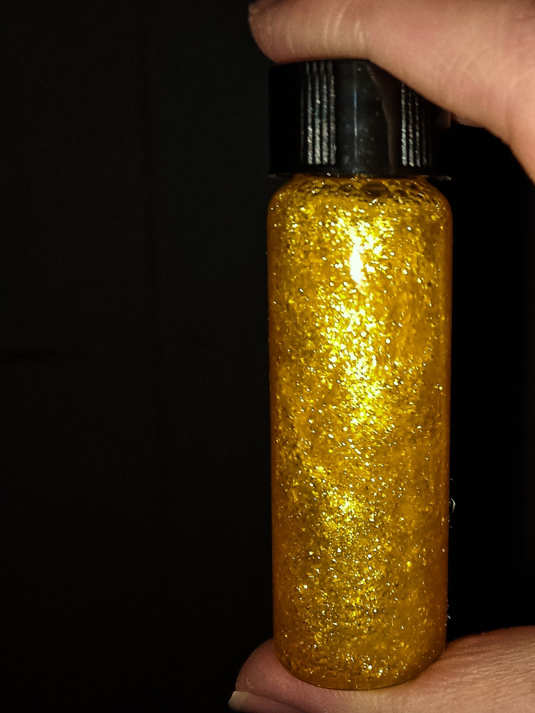

晶体化学指南
黄晶雨（碘化铅）篇

图源：迷路的野指针
🎯 预览
项目概览：
难度等级：★★☆☆☆ (中级)
制备周期：2-3小时
成功率：80%
推荐人群：有化学实验经验者
所需材料：
乙酸铅 ((CH₃COO)₂Pb)
乙酸 (CH₃COOH)
碘化钾 (KI)
蒸馏水、甘油
50mL烧杯、250mL烧杯
表面皿、西林瓶/螺口瓶
电子秤、磁力搅拌器/玻璃棒
一、基础认识
1.1 化学特性
化学式：PbI₂（碘化铅）
外观特征
金黄色晶体，加热溶解冷却后析出，形成流星雨般的壮观场景
溶解特性
碘化铅在热水中溶解度较高，冷却后溶解度急剧下降，形成过饱和溶液析出晶体
热致变色
温度变化驱动溶解-结晶过程，形成动态的"晶雨"效果
1.2 反应原理
反应方程式
(CH₃COO)₂Pb + 2KI → 2CH₃COOK + PbI₂↓
乙酸作用
乙酸防止铅盐水解，保持溶液澄清，促进反应完全
甘油作用
增加溶液密度和粘稠度，减缓晶体沉降速度，延长观赏时间
二、实验与制备
2.1 实验步骤
💡 黄晶雨制备法
材料：乙酸铅、乙酸、碘化钾、蒸馏水、甘油、烧杯、表面皿、西林瓶
步骤一：配制乙酸铅溶液
称取0.38g乙酸铅于50mL烧杯中，加入40mL水后充分搅拌，直至出现明显浑浊
乙酸铅溶解度有限，未溶解部分形成浑浊
步骤二：加入乙酸
向浑浊溶液中加入3-5mL乙酸，此时溶液迅速恢复澄清
乙酸防止铅盐水解，保持溶液酸性环境
步骤三：配制碘化钾溶液
在另一烧杯中加入0.35g碘化钾，加15mL水后充分搅拌，直至完全溶解
碘化钾易溶于水，形成无色透明溶液
步骤四：混合溶液
将两烧杯中溶液倒入250mL烧杯中混合，加水至120mL总体积
此时可能产生少量黄色沉淀（碘化铅）
步骤五：加热处理
加热250mL烧杯中的溶液，至溶液基本澄清时停止加热
加热促进碘化铅溶解，此时溶液应只有少量沉淀
步骤六：过滤
趁热过滤溶液，将过滤后的澄清溶液倒入新的250mL烧杯中
过滤去除不溶性杂质，获得清澈的热饱和溶液
步骤七：装瓶与添加甘油
将热溶液倒入西林瓶中，盖紧瓶盖
可加入适量甘油增大溶液密度和粘稠度，延长晶体悬浮时间
步骤八：冷却与晶雨形成
西林瓶静置1-2小时自然冷却，当溶液冷却至室温时，"黄晶雨"出现
冷却过程中碘化铅溶解度降低，析出金黄色晶体
步骤九：清理工作
将所有仪器洗净并收好，清理桌面，完成实验
特别注意含铅废液的处理，必须进行无害化处理
2.2 优化技巧
甘油添加时机
过滤后、装瓶前加入甘油，搅拌均匀后再装瓶
加热温度控制
加热至80-90℃为宜，过高温度可能导致乙酸挥发过快
冷却速度控制
自然冷却可获得更均匀的晶体分布，避免快速冷却导致晶体过大
溶液浓度调整
可根据需要微调反应物比例，控制晶体密度和大小
三、安全与注意事项
3.1 铅盐毒性警告
重金属毒性：
Pb²⁺为重金属离子，对人体及生物有害，具有累积毒性
全程防护：
实验必须全程戴好防护手套、护目镜和实验服
严禁接触：
绝对避免皮肤直接接触含铅化合物和溶液
通风要求：
必须在通风良好或通风橱内进行操作
3.2 废液处理
专门收集：
所有含铅废液必须专门收集，不可倒入普通下水道
无害化处理：
废液需进行化学沉淀处理（如加入硫化钠生成硫化铅沉淀）后，交由专业机构处理
容器清洗：
接触过铅盐的容器需用稀硝酸清洗后再用水冲洗
3.3 应急处理
皮肤接触
立即用大量清水冲洗15分钟，如有不适及时就医
眼睛接触
立即用流动清水冲洗15分钟，并立即就医
误食处理
立即漱口，饮用牛奶或蛋清，并立即就医
泄漏处理
用沙土或专用吸附剂覆盖，收集后按危险废物处理
四、成果展示与质量评估
优质黄晶雨特征
优质黄晶雨：
晶体呈鲜艳的金黄色
晶体分布均匀，悬浮时间长
溶液澄清透明，便于观察
晶雨效果明显，如流星雨般壮观
问题晶雨：
颜色暗淡 - 反应不完全或浓度不足
晶体沉淀过快 - 溶液粘稠度不足
溶液浑浊 - 过滤不彻底或杂质过多
晶体过大 - 冷却速度过慢或浓度过高
五、问题诊断与解决
常见问题排查
问题一：晶雨形成缓慢
可能原因：
冷却速度过快、溶液过饱和不足、乙酸过量
解决方案：
控制自然冷却速度，确保加热完全，适当调整乙酸用量
问题二：晶体颜色不鲜艳
可能原因：
原料不纯、反应不完全、光照条件差
解决方案：
使用高纯度试剂，确保反应完全，在良好光线下观察
问题三：晶体沉淀过快
可能原因：
甘油添加不足、晶体尺寸过大
解决方案：
增加甘油用量，控制晶体生长条件
问题四：溶液浑浊
可能原因：
过滤不彻底、杂质污染
解决方案：
重新过滤溶液，确保容器洁净
六、科学原理
6.1 热致结晶原理
溶解度变化
碘化铅在热水中溶解度显著高于冷水，温度变化驱动结晶过程
过饱和形成
热饱和溶液冷却后成为过饱和溶液，自发析出晶体
晶核形成
冷却过程中形成大量微晶核，悬浮在溶液中形成"晶雨"
6.2 化学平衡原理
沉淀反应
乙酸铅与碘化钾发生复分解反应，生成碘化铅沉淀
乙酸作用机制
乙酸提供酸性环境，防止铅离子水解生成氢氧化铅，保持溶液澄清
溶解平衡
加热破坏沉淀溶解平衡，冷却重建平衡，驱动结晶过程
七、应用与展示
7.1 艺术展示
观赏工艺品
装瓶后的西林瓶/螺口瓶可作为独特的观赏工艺品，展现化学之美
科学演示
可用于演示溶解平衡、结晶过程和热致变色现象，适合科学展览和教学
摄影素材
金黄色晶体在溶液中悬浮的动态效果，是极佳的摄影和视频素材
八、保存与维护
8.1 保存方法
密封保存
使用西林瓶或螺口瓶严格密封，防止溶液蒸发和污染
避光存放
避免阳光直射，防止碘化铅光解或颜色变化
温度稳定
存放在温度稳定的环境中，避免反复加热冷却
防破损
小心保管防止玻璃瓶破裂，放置在安全位置
定期检查
定期检查是否有沉淀聚集、溶液浑浊或泄漏迹象
本章作者
不会炼金的阿贝少
晶体专家
内容导航
基础认识
实验制备
安全事项
质量评估
问题诊断
科学原理
应用展示
保存维护
返回首页